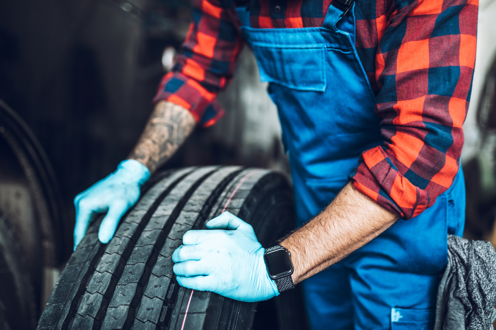

Home / Blog / TRMG Recommended Practices
PROCESS GUIDEThe tread rubber and repair materials makers publish 18 recommended practices, and TIA hosts them. How an in-house line can use them as the backbone of its written procedures, and what they do not cover.
Published October 18, 2026 · Good Hope Retreaders

A fleet that decides to run its own retread line quickly runs into a practical question: written to what standard? Retreading is a process of many small steps, and the quality of the finished tire depends on doing each one the same way every time. That means written procedures. The good news is that you do not have to start from a blank page.
The Tread Rubber and Tire Repair Materials Manufacturers Group (TRMG) publishes industry recommended practices for retreading and repair, and the Tire Industry Association (TIA) hosts them for download.
In 2019, TIA announced it would host TRMG’s retread and repair recommended practices on its resources page. According to that announcement and trade-press coverage of it, TRMG has 18 recommended practices in total. They include a consolidated document, the Industry Recommended Practices for Tire Retreading and Repairing, available in English and Spanish. The audience described is retread plants and commercial tire dealers that provide repair services, which is a reasonable description of an in-house line too.
The practices are maintained, not frozen. TRMG has published a practice on buffing and rubber texturization (RP-01/02-23) together with a buff textures reference sheet, and both can be downloaded from the TIA and TRIB websites. We went through one of these in detail in our guide to buffing profile and crown radius.
One detail worth knowing: TRIB is the designated distributor of the consolidated practices, but its distribution notice says TRIB did not take part in the technical discussions that produced the document. The technical content comes from the materials manufacturers. Treat it as an industry reference, not a regulation.
The practices tell you what the industry recommends. Your procedures tell your technicians what to do at your machines. A workable approach:
The same documents are a ready-made checklist for equipment decisions. Rasp and blade choice, for example, ties directly to buffing texture. Our rasp blade selection guide walks through it.
This is reasoning rather than data. When a fleet depends on an outside retreader, the procedures are someone else’s, and the fleet sees mostly the result. When the line is in-house, the procedures are yours to write, audit and improve, and the same technicians who follow them can see what the results say. A line built on the industry’s published practices, rather than on one supplier’s program, can be equipped and supplied by any vendor that meets the specification. Our article on single-supplier lock-in versus running your own line makes the general case.
If you are still sizing the equipment side, our casing inspection check and hot final inspection guide show where the first and last quality gates sit.
We supply retreading machinery, curing chambers, consumables and repair tools from our Ontario warehouse, with transparent all-in Canadian pricing and local service. Tell us your tire sizes and volume and we will help you spec the line.
Request a quote →Send us your requirements and we'll get back to you within 24 hours with pricing and lead times — no obligation.